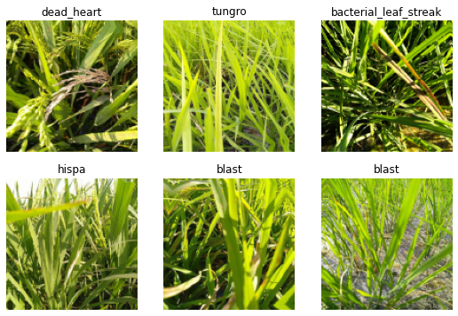
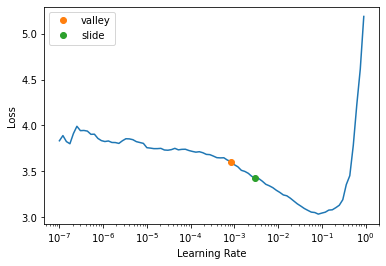

# install fastkaggle if not available
try: import fastkaggle
except ModuleNotFoundError:
!pip install -Uq fastkaggle
from fastkaggle import *0008_fastai_first_steps_road_to_top_part_1
how to install fastkaggle if not available
how to iterate like a grandmaster
In Iterate Like a Grandmaster I explained that when working on a Kaggle project:
…the focus generally should be two things:
- Creating an effective validation set
- Iterating rapidly to find changes which improve results on the validation set.
Here I’m going to go further, showing the process I used to tackle the Paddy Doctor competition, leading to four submissions in a row which all were (at the time of submission) in 1st place, each one more accurate than the last. You might be surprised to discover that the process of doing this was nearly entirely mechanistic and didn’t involve any consideration of the actual data or evaluation details at all.
This notebook is the first in a series showing every step of the process. At the end of this notebook we’ll have a basic submission; by the end of the series you’ll see how I got to the top of the table!:

Getting set up
how to setup for fastkaggle; how to use fastkaggle to download dataset from kaggle; how to access the path
First, we’ll get the data. I’ve just created a new library called fastkaggle which has a few handy features, including getting the data for a competition correctly regardless of whether we’re running on Kaggle or elsewhere. Note you’ll need to first accept the competition rules and join the competition, and you’ll need your kaggle API key file kaggle.json downloaded if you’re running this somewhere other than on Kaggle. setup_comp is the function we use in fastkaggle to grab the data, and install or upgrade our needed python modules when we’re running on Kaggle:
comp = 'paddy-disease-classification'
path = setup_comp(comp, install='fastai "timm>=0.6.2.dev0"')pathPath('paddy-disease-classification')which fastai module to use for vision problem; how to check files inside the dataset path; why Jeremy recommend not to use seed in your own analysis;
Now we can import the stuff we’ll need from fastai, set a seed (for reproducibility – just for the purposes of making this notebook easier to write; I don’t recommend doing that in your own analysis however) and check what’s in the data:
from fastai.vision.all import *
set_seed(42)
path.ls()(#6) [Path('paddy-disease-classification/sample_submission.csv'),Path('paddy-disease-classification/test_images'),Path('paddy-disease-classification/subm.csv'),Path('paddy-disease-classification/train_images'),Path('paddy-disease-classification/train.csv'),Path('paddy-disease-classification/models')]Looking at the data
how to access a subfolder by name using path from setup_comp; how to extract all image files from a folder
The images are in train_images, so let’s grab a list of all of them:
trn_path = path/'train_images'
files = get_image_files(trn_path)…and take a look at one:
how to create an image from an image file; how to access the size of an image; how to display it with specified size for viewing
img = PILImage.create(files[0])
print(img.size)
img.to_thumb(128)(480, 640)how to use fastcore.parallel to quickly access size of all images; how to count the occurance of each unique value in a pandas
Looks like the images might be 480x640 – let’s check all their sizes. This is faster if we do it in parallel, so we’ll use fastcore’s parallel for this:
from fastcore.parallel import *
def f(o): return PILImage.create(o).size
sizes = parallel(f, files, n_workers=8)
pd.Series(sizes).value_counts()(480, 640) 10403
(640, 480) 4
dtype: int64how to create an image dataloaders; how to setup item_tfms and batch_tfms on image sizes; why to start with the smallest sizes first; how to display images in batch
They’re nearly all the same size, except for a few. Because of those few, however, we’ll need to make sure we always resize each image to common dimensions first, otherwise fastai won’t be able to create batches. For now, we’ll just squish them to 480x480 images, and then once they’re in batches we do a random resized crop down to a smaller size, along with the other default fastai augmentations provided by aug_transforms. We’ll start out with small resized images, since we want to be able to iterate quickly:
dls = ImageDataLoaders.from_folder(trn_path, valid_pct=0.2, seed=42,
item_tfms=Resize(480, method='squish'),
batch_tfms=aug_transforms(size=128, min_scale=0.75))
dls.show_batch(max_n=6)
Our first model
how to pick the first pretrained model for our model; how to build our model based on the selected pretrained model
Let’s create a model. To pick an architecture, we should look at the options in The best vision models for fine-tuning. I like the looks of resnet26d, which is the fastest resolution-independent model which gets into the top-15 lists there.
learn = vision_learner(dls, 'resnet26d', metrics=error_rate, path='.').to_fp16()how to find the learning rate for our model
Let’s see what the learning rate finder shows:
learn.lr_find(suggest_funcs=(valley, slide))SuggestedLRs(valley=0.0008317637839354575, slide=0.0030199517495930195)
lr_find generally recommends rather conservative learning rates, to ensure that your model will train successfully. I generally like to push it a bit higher if I can. Let’s train a few epochs and see how it looks:
learn.fine_tune(3, 0.01)| epoch | train_loss | valid_loss | error_rate | time |
|---|---|---|---|---|
| 0 | 1.805964 | 1.233453 | 0.403652 | 00:14 |
| epoch | train_loss | valid_loss | error_rate | time |
|---|---|---|---|---|
| 0 | 1.129876 | 0.785891 | 0.266218 | 00:15 |
| 1 | 0.777808 | 0.456637 | 0.143681 | 00:15 |
| 2 | 0.557498 | 0.407197 | 0.136473 | 00:15 |
We’re now ready to build our first submission. Let’s take a look at the sample Kaggle provided to see what it needs to look like:
Submitting to Kaggle
how to check the kaggle submission sample csv file
ss = pd.read_csv(path/'sample_submission.csv')
ss| image_id | label | |
|---|---|---|
| 0 | 200001.jpg | NaN |
| 1 | 200002.jpg | NaN |
| 2 | 200003.jpg | NaN |
| 3 | 200004.jpg | NaN |
| 4 | 200005.jpg | NaN |
| ... | ... | ... |
| 3464 | 203465.jpg | NaN |
| 3465 | 203466.jpg | NaN |
| 3466 | 203467.jpg | NaN |
| 3467 | 203468.jpg | NaN |
| 3468 | 203469.jpg | NaN |
3469 rows × 2 columns
how to sort the files in the test set in the alphabetical order; how to create dataloaders for the test set based on the dataloaders of the training set
OK so we need a CSV containing all the test images, in alphabetical order, and the predicted label for each one. We can create the needed test set using fastai like so:
tst_files = get_image_files(path/'test_images').sorted()
tst_dl = dls.test_dl(tst_files)how to make predictions for all test set; and what does learn.get_preds return
We can now get the probabilities of each class, and the index of the most likely class, from this test set (the 2nd thing returned by get_preds are the targets, which are blank for a test set, so we discard them):
probs,_,idxs = learn.get_preds(dl=tst_dl, with_decoded=True)
idxsTensorBase([7, 8, 7, ..., 8, 7, 5])how to access all the classes of labels with dataloaders
These need to be mapped to the names of each of these diseases, these names are stored by fastai automatically in the vocab:
dls.vocab['bacterial_leaf_blight', 'bacterial_leaf_streak', 'bacterial_panicle_blight', 'blast', 'brown_spot', 'dead_heart', 'downy_mildew', 'hispa', 'normal', 'tungro']how to map classes to each idx from the predictions
We can create an apply this mapping using pandas:
mapping = dict(enumerate(dls.vocab))
results = pd.Series(idxs.numpy(), name="idxs").map(mapping)
results0 hispa
1 normal
2 hispa
3 blast
4 blast
...
3464 dead_heart
3465 hispa
3466 normal
3467 hispa
3468 dead_heart
Name: idxs, Length: 3469, dtype: objecthow to save result into csv file
Kaggle expects the submission as a CSV file, so let’s save it, and check the first few lines:
ss['label'] = results
ss.to_csv('subm.csv', index=False)
!head subm.csvimage_id,label
200001.jpg,hispa
200002.jpg,normal
200003.jpg,hispa
200004.jpg,blast
200005.jpg,blast
200006.jpg,brown_spot
200007.jpg,dead_heart
200008.jpg,brown_spot
200009.jpg,hispahow to submit to kaggle with fastkaggle api
Let’s submit this to kaggle. We can do it from the notebook if we’re running on Kaggle, otherwise we can use the API:
if not iskaggle:
from kaggle import api
api.competition_submit_cli('subm.csv', 'initial rn26d 128px', comp)100%|██████████████████████████████████████████| 70.0k/70.0k [00:05<00:00, 13.8kB/s]Successfully submitted to Paddy Doctor: Paddy Disease ClassificationSuccess! We successfully created a submission.
Conclusion
what is the most important thing for your first model
Our initial submission is not very good (top 80% of teams) but it only took a minute to train. The important thing is that we have a good starting point to iterate from, and we can do rapid iterations. Every step from loading the data to creating the model to submitting to Kaggle is all automated and runs quickly.
Therefore, we can now try lots of things quickly and easily and use those experiments to improve our results. In the next notebook, we’ll do exactly that!
If you found this notebook useful, please remember to click the little up-arrow at the top to upvote it, since I like to know when people have found my work useful, and it helps others find it too. And if you have any questions or comments, please pop them below – I read every comment I receive!
Addendum
how to quickly push your local notebook to become kaggle notebook online
fastkaggle also provides a function that pushes a notebook to Kaggle Notebooks. I wrote this notebook on my own machine, and pushed it to Kaggle from there – here’s the command I used:
if not iskaggle:
push_notebook('jhoward', 'first-steps-road-to-the-top-part-1',
title='First Steps: Road to the Top, Part 1',
file='first-steps-road-to-the-top-part-1.ipynb',
competition=comp, private=False, gpu=True)Kernel version 10 successfully pushed. Please check progress at https://www.kaggle.com/code/jhoward/first-steps-road-to-the-top-part-1from fastdebug.utils import *nb_name()'0008_fastai_first_steps_road_to_top_part_1.ipynb'ipy2md()[jupytext] Reading /Users/Natsume/Documents/fastdebug/nbs/2022part1/0008_fastai_first_steps_road_to_top_part_1.ipynb in format ipynb
[jupytext] Writing /Users/Natsume/Documents/fastdebug/nbs/2022part1/0008_fastai_first_steps_road_to_top_part_1.md
cp to : /Users/Natsume/Documents/divefastai/Debuggable/jupytext
move to : /Users/Natsume/Documents/fastdebug/mds/2022part1/[NbConvertApp] Converting notebook /Users/Natsume/Documents/fastdebug/nbs/2022part1/0008_fastai_first_steps_road_to_top_part_1.ipynb to markdowncopy to : /Users/Natsume/Documents/fastdebug/mds_output
move to : /Users/Natsume/Documents/divefastai/Debuggable/nbconvert[NbConvertApp] Support files will be in 0008_fastai_first_steps_road_to_top_part_1_files/
[NbConvertApp] Making directory /Users/Natsume/Documents/fastdebug/nbs/2022part1/0008_fastai_first_steps_road_to_top_part_1_files
[NbConvertApp] Making directory /Users/Natsume/Documents/fastdebug/nbs/2022part1/0008_fastai_first_steps_road_to_top_part_1_files
[NbConvertApp] Making directory /Users/Natsume/Documents/fastdebug/nbs/2022part1/0008_fastai_first_steps_road_to_top_part_1_files
[NbConvertApp] Writing 20191 bytes to /Users/Natsume/Documents/fastdebug/nbs/2022part1/0008_fastai_first_steps_road_to_top_part_1.mdfastnbs("push kaggle")how to quickly push your local notebook to become kaggle notebook online
fastkaggle also provides a function that pushes a notebook to Kaggle Notebooks. I wrote this notebook on my own machine, and pushed it to Kaggle from there – here’s the command I used:
if not iskaggle:
push_notebook('jhoward', 'first-steps-road-to-the-top-part-1',
title='First Steps: Road to the Top, Part 1',
file='first-steps-road-to-the-top-part-1.ipynb',
competition=comp, private=False, gpu=True)from fastdebug.utils import *nb_name()ipy2md()fastnbs("push kaggle")